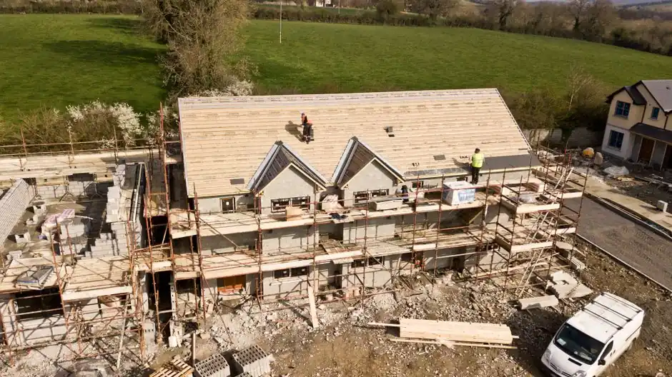

Leak detection
We use advanced techniques to accurately locate leaks in your roofing system, ensuring effective repairs.
Our roof leak repair services cover a comprehensive range of repairs to ensure your roof is fully functional and protected.
We use advanced techniques to accurately locate leaks in your roofing system, ensuring effective repairs.
Damaged shingles or tiles will be replaced with high-quality materials to restore integrity to your roof.
We apply premium sealants to prevent future leaks and water damage, ensuring long-lasting results.
After repairs, we conduct a thorough inspection to ensure everything is secure and functioning correctly.
$50 OFF First-Time Service
Mention this offer when scheduling. New customers only — restrictions apply.
Roof leak repair services Texas involve identifying and fixing leaks in roofing systems to prevent water damage. This includes inspecting the roof, sealing leaks, and replacing damaged materials using high-quality products like GAF and CertainTeed.
Homeowners in Texas often face roof leaks due to extreme weather conditions, including heavy rain and hail. Utilizing the best roof leak repair in Texas can save you from costly repairs down the line and ensure the longevity of your roof.
Our structured approach ensures thorough and effective roof leak repairs for Texas homeowners.
Schedule
Call or book online — a real human picks up and confirms a 2-hour arrival window.
Diagnose
Licensed tech inspects on-site, then walks you through the cause and your options.
Fix
Clean, code-correct repair done with the right parts and zero subcontracted shortcuts.
Guarantee
Every job backed by a written workmanship warranty — and we stand behind it.
Roofing nailer
Used for securing shingles and tiles, ensuring a tight seal against leaks.
Shingle cutter
Allows for precise cutting of shingles to fit around roof features and ensure a proper fit.
Ladder
Essential for safely accessing roofs during inspections and repairs.
Roofing hammer
Used for securing roofing materials and ensuring a secure installation.
Moisture detection
We use advanced moisture detection tools to locate hidden leaks and assess moisture levels in roofing materials.
Sealing techniques
Our team applies high-quality sealants to prevent future leaks and ensure long-lasting repairs.
Insulation assessment
We evaluate the insulation in your attic to ensure it meets current standards and prevents ice damming.
01
What we do: Contact us for a prompt inspection and repair to prevent further damage.
→ Your roof will be restored, and your home will remain safe and dry.
02
What we do: Our team will assess the damage and replace any missing shingles immediately.
→ Your roof will be protected from leaks and further deterioration.
03
What we do: We will identify and repair any leaks causing moisture buildup, eliminating the mold risk.
→ Your attic will be dry and mold-free, improving your home's air quality.
Roof leak repair services Texas must consider the unique climate and building codes of the region. With heavy rains and occasional hailstorms, roofs are prone to leaks and damage. Our team understands local regulations and common materials used in Texas roofs, ensuring compliance and quality workmanship. We provide the best roof leak repair in Texas, focusing on customer satisfaction and long-term results.
Flower Mound
Known for its diverse roofing styles, we ensure that repairs meet local aesthetic standards.
Kerrville
In areas with high humidity, we focus on moisture management to prevent leaks.
Rockwall
We understand the specific challenges faced by homes in this lakeside community.
High humidity levels during summer
Increased risk of mold and leaks if roofs are not properly maintained.
Frequent hailstorms in spring
Hail can cause significant damage to shingles, requiring prompt repairs.
Our roof leak repair services address several common issues faced by homeowners in Texas.
Problem
Ignoring these signs can lead to mold growth and structural damage over time.
Our Fix
Our team identifies the source of the leaks and provides effective repairs to restore your home.
Problem
Missing shingles expose your roof to further damage, increasing repair costs.
Our Fix
We replace damaged shingles promptly to protect your roof from the elements.
Problem
Ice dams can cause water to back up under shingles, leading to leaks inside your home.
Our Fix
Our experts provide solutions to prevent ice damming and ensure your roof remains leak-free.

Roof leak repair services provide numerous advantages for homeowners, including enhanced protection and increased property value.
Prevent further damage
Timely roof leak repairs can prevent extensive damage to your home, saving you up to 50% on future repair costs.
Increase home value
A well-maintained roof enhances your home's curb appeal and market value by 10-15%, making it a smart investment.
Energy efficiency
Effective leak repairs improve insulation, potentially reducing your energy bills by 20%.
Peace of mind
Knowing your roof is secure and leak-free allows you to focus on other aspects of home maintenance without worry.
Roof leak repair services Texas typically range from $180 to $450, depending on the extent of the damage and materials required. Factors such as roof type and accessibility can influence the overall cost. We offer free estimates to ensure transparency and help you budget effectively.
Typical Investment Range
$180 - $450 depending on scope
Investing in roof leak repairs now can save you from costly damage and repairs in the future.
What changes the price
Type of roofing material
Different materials like metal, asphalt, or tile may have varying repair costs based on their characteristics.
Extent of damage
Severe damage requiring extensive repairs will naturally increase the overall cost.
Accessibility of the roof
Roofs that are difficult to access may require additional equipment and time, affecting labor costs.
With over 15 years of experience, our team of licensed professionals specializes in roof leak repair services Texas. We are NRCA Certified and OSHA compliant.

Our roof leak repair services Texas extend across numerous cities, ensuring homeowners receive the assistance they need promptly. We proudly serve El Paso, Garland, Pasadena, Pearland, Edinburg, Flower Mound, Pflugerville, Rockwall, Channelview, Prosper, Fulshear, Nacogdoches, Fort Hood, Kerrville, and Horizon City with quality solutions.
In El Paso, we provide quick and reliable roof leak repair services, ensuring homes are protected from the elements.
Our team in Garland specializes in addressing roof leaks caused by heavy rains, ensuring your home stays dry.
We offer comprehensive roof leak repair services in Pasadena, focusing on quality and customer satisfaction.
In Pearland, we quickly address roof leaks to prevent further damage and maintain home integrity.
Our Edinburg team is equipped to handle roof repairs efficiently, ensuring homes remain leak-free.
We provide expert roof leak repair services in Flower Mound, focusing on long-lasting solutions.
In Pflugerville, we address roof leaks promptly, ensuring your home is protected from water damage.
Our Rockwall team specializes in roof leak repairs, using high-quality materials for lasting results.
In Channelview, we offer reliable roof leak repair services to keep your home safe and dry.
Our Prosper team provides fast and effective roof leak repairs, ensuring your home remains secure.
In Fulshear, we deliver quality roof leak repair services, focusing on customer satisfaction and quality.
Our Nacogdoches team is ready to handle any roof leak repair needs, ensuring your home is protected.
In Fort Hood, we provide prompt and effective roof leak repair services to ensure your home stays dry.
Our Kerrville team specializes in addressing roof leaks quickly, maintaining the integrity of your home.
In Horizon City, we focus on providing reliable roof leak repair services to protect your home from damage.
Real answers to the questions we hear most often from local homeowners and property managers.
Our roof repair services address various issues, including leaks, ensuring your roof remains in top condition.
View Roof RepairWhen repairs aren't enough, our roof replacement service offers a comprehensive solution for aging roofs.
View Roof ReplacementWe provide emergency roof repair services to address urgent leaks and damage, available 24/7 across Texas.
View Emergency Roof RepairOur hail damage roof repair services ensure your roof is restored after severe weather, using high-quality materials.
View Hail Damage Roof RepairWe specialize in storm damage roof repair, providing quick and effective solutions to protect your home.
View Storm Damage Roof RepairRegular roof inspections help identify potential issues early, preventing costly repairs down the line.
View Roof InspectionWe're here to help you with all your roofing needs. Reach out to us for a free estimate or to schedule a service. Our team is available Monday through Friday, with quick response times.
Phone
(254) 489-4621Address
Texas
Hours
Mon–Fri: 7AM – 7PM
Sat: 8AM – 4PM
Sun: Emergency Only
24/7 Emergency Available